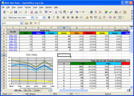

Calc
Preglednica za vse namene
CALC je program za preglednice, ki ste si ga vedno želeli. Začetniki ga spoznavajo kot intuitivnega in enostavnega za učenje; vsi, ki profesionalno izkopavajo podatke in meljejo številke, pa bodo hvaležni za obširen nabor naprednih funkcij.
 Napredna tehnologija DataPilot naredi uvoz surovih podatkov iz korporacijskih zbirk podatkov povsem enostaven; navzkrižno-razmejite, povzemite in pretvorite jih v pomenljive podatke.
{kind=link}
Formule v naravnem jeziku omogočajo ustvarjanje formul z besedami (npr. "prodaja – stroški" oz. "sales - cost").
The Gumb za pametno vsoto samodejno vstavi funkcijo vsote ali vmesne vsote, odvisno od konteksta.
Čarovniki vas vodijo skozi izbiro in uporabo obširnega nabora naprednih funkcij za preglednice.
S Slogi in oblikovanjem lahko na enostaven način uporabite možnosti prilagodljivega oblikovanja celic, vključno s prostim sukanjem vsebine, predlogami, ozadji, robovi in še mnogo drugega. Zahvaljujoč predlogam z vgrajenimi funkcijami, ki vam omogočajo osredotočanje na svoje resnično delo, lahko postanete sam svoj izvedenec za preglednice.
Upravitelj scenarijev omogoča analizo "kaj če ..." s pritiskom na gumb - npr. primerjajte donosnost za višje / srednje / nižje napovedi prodaje.
Skrijte ali razkrijte Teme oblikovanja z enim samim klikom - uporabite privzete ali dodajte svoje.
Shranite svoje preglednice v zapisu OpenDocument format, novem mednarodnem standardu za pisarniške dokumente. Ta zapis, ki temelji na XML, pomeni, da niste omejeni zgolj na CALC. Svoje preglednice lahko uporabljate z vsakim programom, ki podpira standard OpenDocument.
Seveda lahko uporabite tudi svoje stare preglednice Microsoft Excel ali shranite svoje delo v zapisu Excel za pošiljanje ljudem, ki so še vedno vpeti v produkte Microsoft. Če želijo zgolj videti vaše rezultate, uporabite Portable Document Format (.pdf) – nobene potrebe ni, da bi dokupili dodatno programsko opremo.